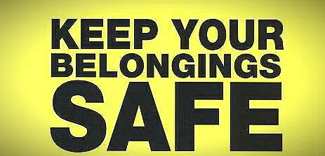
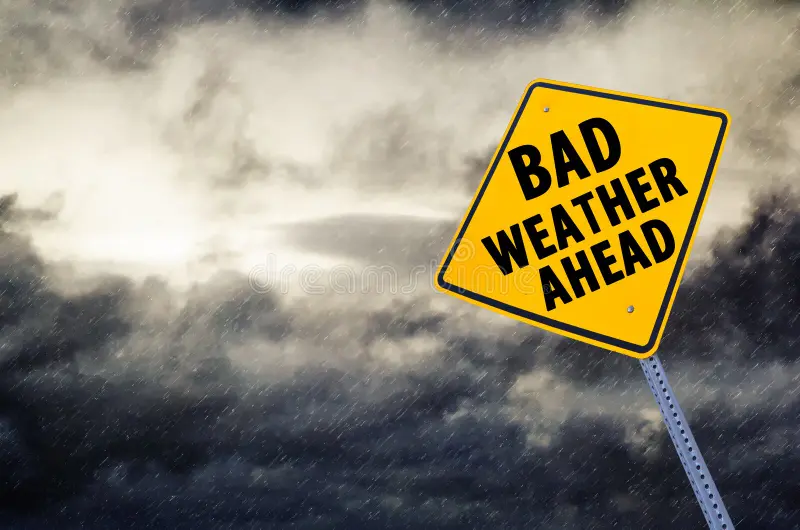

Stay safe while exploring Albay by following important travel safety tips to ensure a smooth and worry-free experience.
Albay is a beautiful and welcoming destination, but like any place, it is important to stay aware and follow basic safety practices. Being prepared and cautious can help you avoid accidents and enjoy your trip with peace of mind. Always prioritize your safety while exploring tourist spots, trying activities, and traveling around the province.

Always keep your personal items such as wallet, phone, and important documents secure. Avoid displaying valuables in crowded areas to prevent loss or theft.

Albay is known for its natural attractions, but weather conditions can change quickly. Always check updates before going to beaches, mountains, or outdoor activities.

Respect local regulations in tourist areas. Follow safety instructions, especially in places like beaches, hiking trails, and public attractions.
Bring necessary medicines, stay hydrated, and rest when needed. Traveling can be tiring, so always take care of your body during your trip.
Always stay alert and be aware of your surroundings. Avoid traveling alone in unfamiliar places at night. Keep emergency contacts saved on your phone and inform someone about your travel plans. It is also important to respect the environment by keeping places clean and following proper guidelines. By being responsible and prepared, you can enjoy a safe and memorable trip in Albay.
Always stay aware of your surroundings and trust your instincts when traveling.
Save important contacts and know the nearest hospitals or police stations in the area.
Plan your trip ahead, avoid risky areas, and follow local advice for a safer experience.